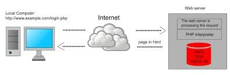
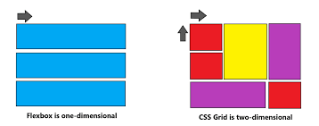

Introduction to Dynamic Web Pages
This section introduces the fundamental concepts of dynamic web pages. We explore how JavaScript interacts with HTML and CSS to create interactive and engaging user experiences. Understanding the DOM and event handling is crucial for building dynamic websites.
Key Concepts
- DOM Manipulation
- Event Listeners
- Asynchronous JavaScript
CSS Layout Techniques: Flexbox and Grid
Here, we delve into modern CSS layout techniques, focusing on Flexbox and CSS Grid. These powerful tools enable us to create flexible and responsive layouts that adapt to different screen sizes. We'll look at practical examples of how to implement these techniques.
Flexbox vs. Grid
Flexbox is ideal for one-dimensional layouts, while Grid excels in two-dimensional arrangements.